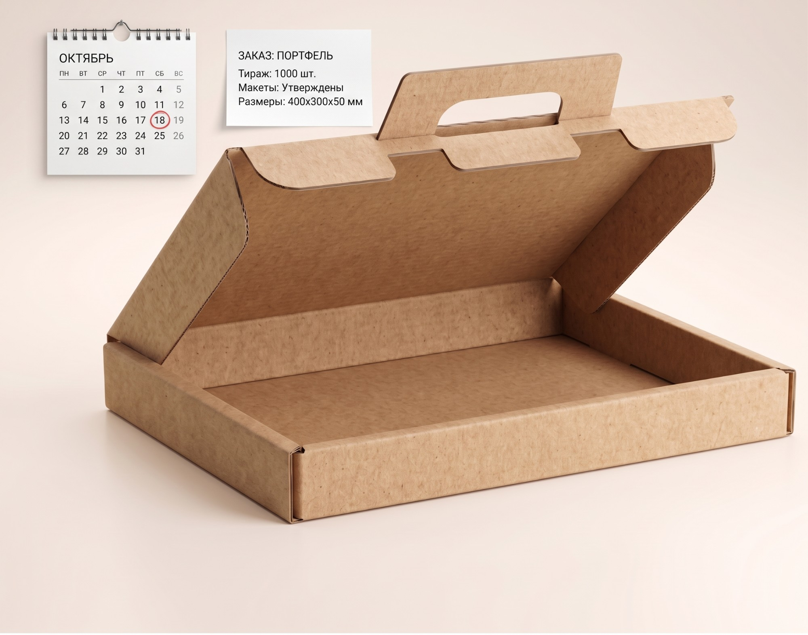
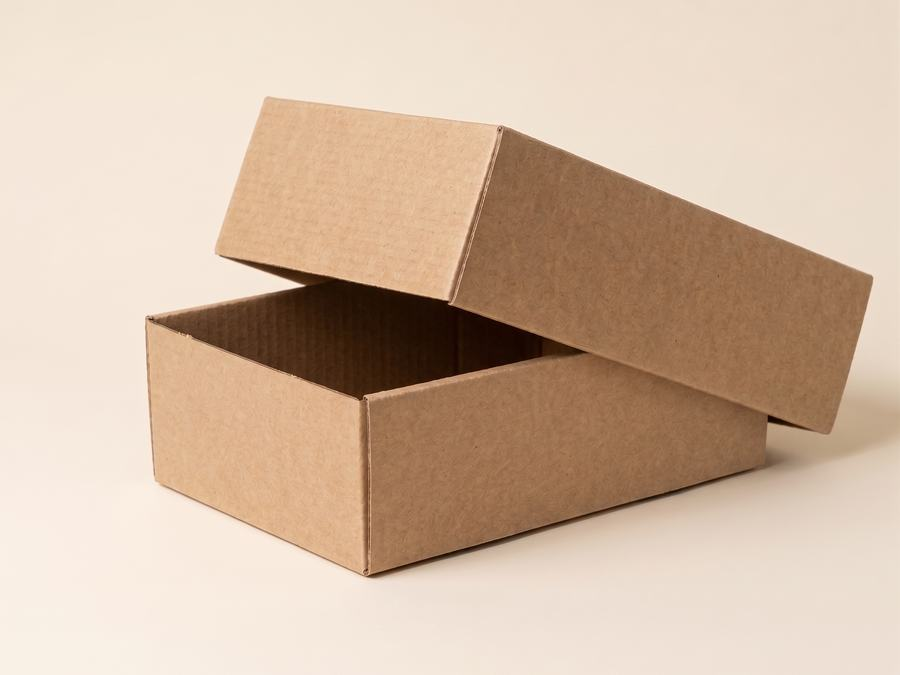
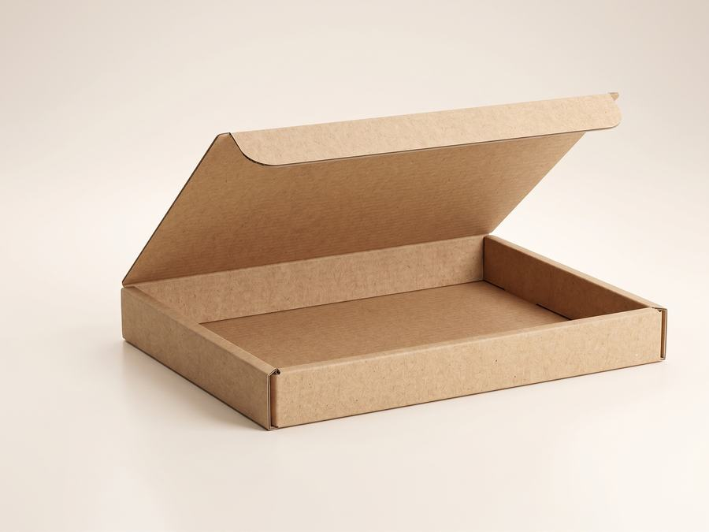

Считайте по внутреннему размеру: он должен быть чуть больше товара — с запасом на упаковочный материал. Стенка картона добавляет несколько миллиметров с каждой стороны уже снаружи, и именно на этом чаще всего ошибаются.
Внутренний и внешний размер — не одно и то же
Внутренний размер — это пространство, куда встаёт товар. Внешний — то, что вы видите снаружи и что занимает место в машине и на паллете. Разница между ними — толщина стенок: у трёхслойного картона она небольшая, у пятислойного заметно больше, потому что в нём две волны гофры.
Ошибка новичка выглядит так: замерили товар «в притык», заказали короб с такими же размерами — а товар не влезает, потому что цифры оказались внешними. Или наоборот: короб рассчитали по внешнему габариту полки, а он туда не встал.
В чертежах и на биржах короб почти всегда указывают как длина × ширина × высота по внутреннему размеру. Но когда считаете, сколько коробов встанет на паллету или в машину, нужен уже внешний габарит — он больше внутреннего на удвоенную толщину стенки (у Т-22 это обычно 4–5 мм на сторону, у П-32 — 7–9 мм). Путаница между этими двумя цифрами — самая частая причина, почему «расчётный» короб не влезает в фуру так, как ожидали.
Алгоритм расчёта
- Замерьте товар по трём габаритам — длина, ширина, высота. Меряйте самое выпирающее место, а не корпус.
- Добавьте зазор на то, чем товар обёрнут: плёнка, пузырчатка, прокладка, пенопласт. Чем хрупче товар, тем больше запас.
- Проверьте укладку: сколько штук идёт в короб и как они лежат — в один слой, в два, с перегородкой.
- Сверьтесь с прайсом: если получившийся размер близок к ходовому, выгоднее взять складскую позицию.
- Не подошло ничего — заказывайте индивидуальный размер.
Ходовые размеры со склада
| Размер, мм | Марка | Чаще всего под |
|---|---|---|
| 200×200×250 | Т-22 | Мелкий штучный товар |
| 320×250×250 | Т-22 | Средние посылки |
| 380×253×237 | Т-22 | Сборные заказы |
| 400×300×300 | Т-22 | Объёмный лёгкий товар |
| 600×400×400 | Т-22 | Крупные лёгкие партии |
| 577×392×323 | П-32 | Тяжёлый товар |
| 600×400×280 | П-32 | Тяжёлый и габаритный товар |
Актуальные цены по тиражам — на странице «Гофроящики». Какую марку выбрать, разобрано в статье марки гофрокартона.
Товар → рекомендуемый короб
| Товар | Рекомендуемый типоразмер короба (мм) | Марка картона |
|---|---|---|
| Обувь (пара в коробке) | 320×250×250 | Т-22 |
| Книги (несколько штук в стопке) | 380×253×237 | Т-22 |
| Электроника, бытовая техника (крупный габарит) | 600×400×400 | П-32 |
| Бутылки, бокалы (с прокладками) | 400×300×300 | Т-22 + прокладка |
Это ориентир для типового товара. Хрупкий груз и товар нестандартной формы всегда проверяйте по своим габаритам с запасом 5–10 мм — сверить размер поможет менеджер при заявке.
Топ-3 ошибки при расчёте
Готовый размер со склада или расчёт под конкретный товар
Берёте ближайший ходовой размер из таблицы выше. Дешевле и быстрее — короб уже в наличии, ждать изготовления не нужно. Подходит, когда запас по объёму в 10–20% не критичен для доставки и хранения.
Короб считают под конкретный товар и способ укладки — вплотную, без лишнего воздуха. Себестоимость доставки и наполнителя ниже, но нужен тираж и время на изготовление и утверждение чертежа.



Когда нужен индивидуальный размер
Если товар нестандартный, а свободное место в коробе «съедает» деньги на доставке и наполнителе, короб дешевле сделать под товар. Конструкторы рассчитают его под вес, габарит и способ перевозки, подберут марку картона и подготовят чертёж — это услуга «Изготовление по размерам». Сроки и этапы такого заказа разобраны в отдельной статье.
Частые ошибки при расчёте размера
- Меряют товар без упаковочного материала и забывают заложить зазор под плёнку, пузырчатку или прокладку — в итоге товар с обёрткой не входит в уже заказанный короб.
- Путают внутренний размер с внешним при сверке с местом на полке, в машине или на паллете — считать вместимость нужно по внешнему габариту.
- Не учитывают, что при укладке в несколько рядов или «в перекрёстку» реальный требуемый объём короба может быть больше суммы габаритов товаров из-за зазоров между ними.
- Заказывают короб «впритык» для хрупкого товара — без минимального запаса под амортизацию груз бьётся именно об стенки короба при перевозке.